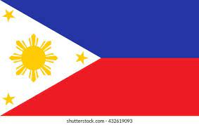
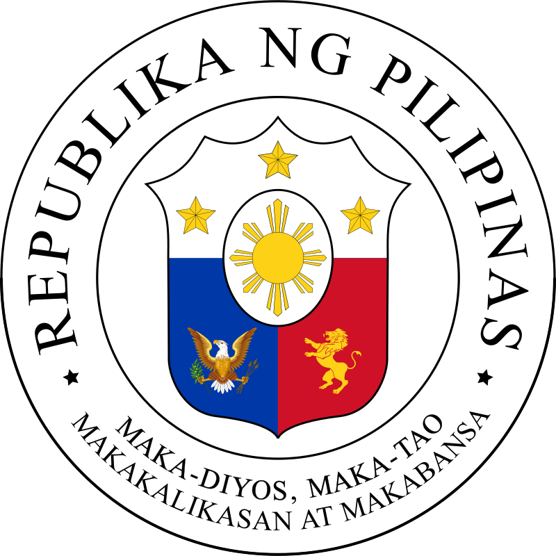
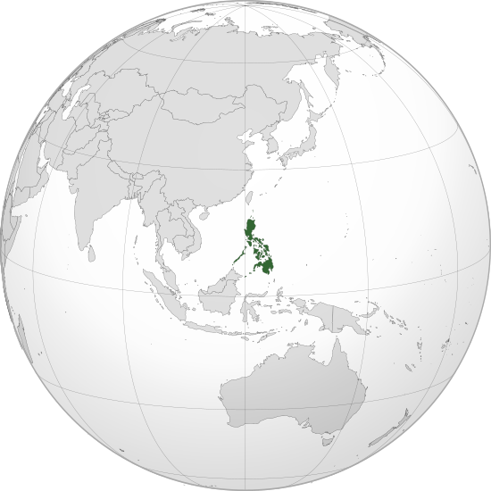

|
Republic of the Philippines Republika ng Pilipinas (filipino) |


|
|
Motto: Maka-Diyos, Maka-tao, Makakalikasan at Makabansa "For God, People, Nature and Country (Latin: Pro Deo Populi Natura et Patria) |
Anthem:Lupang Hinirang "Chosen Land" |
|
Great Seal:  |
|
 "Philippine Globe location" |
The Philippines (/ˈfɪlɪpiːnz/ (Great Seal: 7,641 islands that are broadly categorized under three main geographical divisions from north to south: Luzon, Visayas, and Mindanao. The Philippines is bounded by the South China Sea to the west, the Philippine Sea to the east, and the Celebes Sea to the southwest. It shares maritime borders with Taiwan to the north, Japan to the northeast, Palauto the east and southeast, Indonesia to the south, Malaysia to the southwest, Vietnam to the west, and China to the northwest. The Philippines covers an area of 300,000 km2 (120,000 sq mi) and, as of 2021, it had a population of around 109 million people,[7] making it the world's thirteenth-most populous country. The Philippines has diverse ethnicities and cultures throughout its islands. Manila is the country's capital, while the largest city is Quezon City; both lie within the urban area of Metro Manila.
Negritos, some of the archipelago's earliest inhabitants, were followed by successive waves of Austronesian peoples. Adoption of animism, Hinduism and Islam established island-kingdoms called Kedatuan, Rajahnates, and Sultanates. The arrival of Ferdinand Magellan, a Portuguese explorer leading a fleet for Spain, marked the beginning of Spanish colonization. In 1543, Spanish explorer Ruy López de Villalobos named the archipelago Las Islas Filipinas in honor of Philip II of Spain. Spanish settlement through Mexico, beginning in 1565, led to the Philippines becoming ruled by the Spanish Empire for more than 300 years. During this time, Catholicism became the dominant religion, and Manila became the western hub of trans-Pacific trade. In 1896, the Philippine Revolution began, which then became entwined with the 1898 Spanish–American War. Spain ceded the territory to the United States, while Filipino revolutionaries declared the First Philippine Republic. The ensuing Philippine–American War ended with the United States establishing control over the territory, which they maintained until the Japanese invasion of the islands during World War II. Following liberation, the Philippines became independent in 1946. Since then, the unitary sovereign state has often had a tumultuous experience with democracy, which included the overthrow of a decades-long dictatorship by a nonviolent revolution.
The Philippines is an emerging market and a newly industrialized country whose economy is transitioning from being agriculture centered to services and manufacturing centered. It is a founding member of the United Nations, WTO, ASEAN, the APEC forum, and the EAS. The location of the Philippines as an island country on the Pacific Ring of Fire that is close to the equator makes it prone to earthquakes and typhoons. The country has a variety of natural resources and is home to a globally significant level of biodiversity.